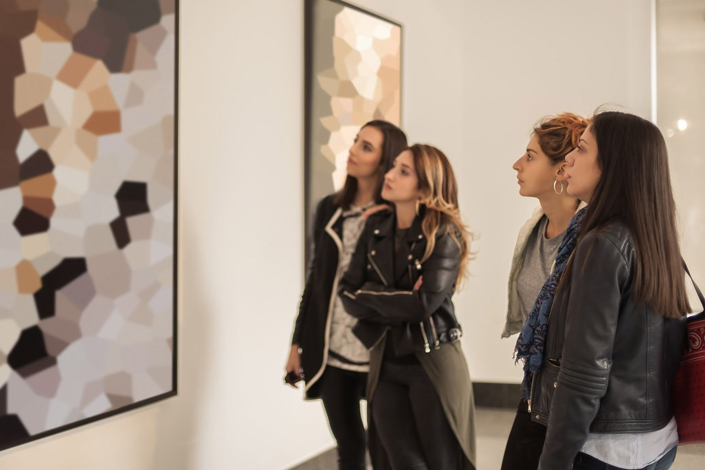

Museumscafé
In unserem Museumscafé können Sie sich Ihren Rundgang Revue passieren lassen und sich erholen. Entspannen Sie sich bei gemütlichem Ambiente, einer heißen Tasse Kaffee und einem selbst gebackenen Stück Kuchen. Saisonal bieten wir zudem kleine Snacks an.
Im Winter knistert ein Feuer im Kamin, im Sommer lädt unser kleines Gärtchen zum Verweilen ein.

Hinter jeder erfolgreichen Frau steht eine beeindruckende Menge Kaffee